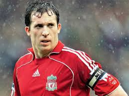

Capacity: 53,394
| Championships | club stadium | Historic scorer |
|---|---|---|
|
|
 |
| English Premier League (19) FA Shield (16) FA Cup (8) English League Cup (9) UEFA Champions League (6) European Super Cup (4) European Cup (3) Club World Cup (1) | Anfield has been the home of Liverpool FC since the club was founded in 1892 Capacity: 53,394 |
Robbie Fowler with 128 goals. |